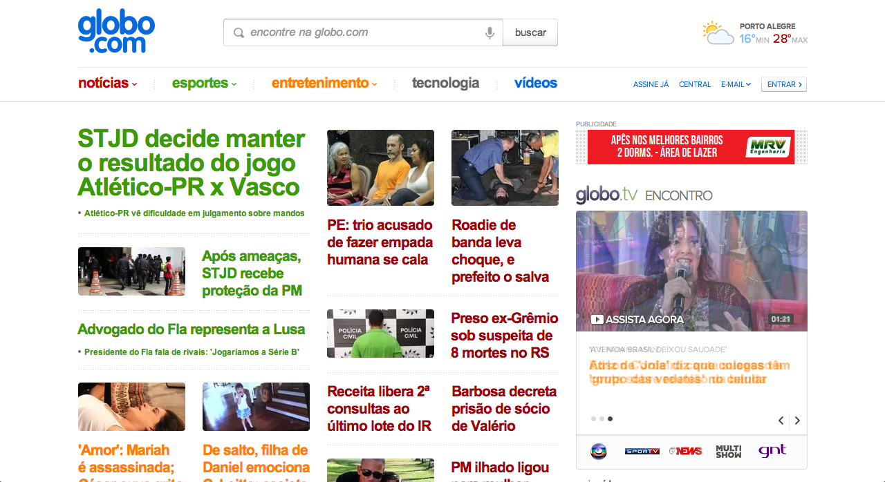
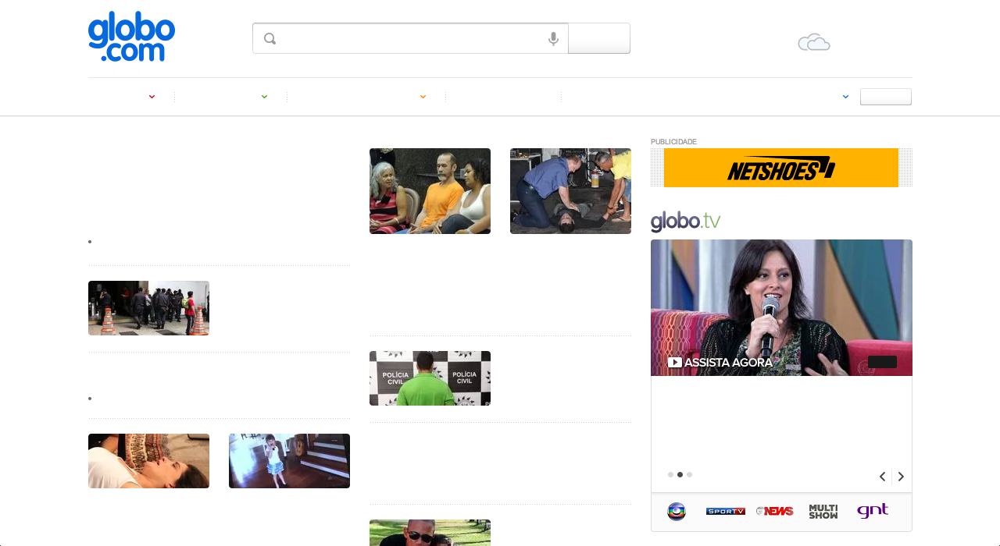

Lean UX - Testando seu design
Como checar a hierarquia visual do seu design

Esse script ofusca todo texto e imagens do seu design, dessa maneira você consegue ver quais elementos se sobressaem e se esses elementos são realmente importantes para o seu design.
document.body.innerHTML += '<style>*, ::-webkit-input-placeholder{ color: transparent !important; text-shadow: 0 0 5px rgba(0,0,0,0.5); } img, iframe, object { -webkit-filter: blur(5px) saturate(200%) sepia(100%) grayscale(100%);}</style>';
Como checar a poluição visual do seu design
Esse script remove todo texto do seu design, se você ainda continua vendo muita informação significa que seu design possuí pouco texto e muita poluição visual que pode ser melhorada.
document.body.innerHTML += '<style>*, ::-webkit-input-placeholder { color: transparent !important; text-shadow: none !important; }</style>';
